Sortwick: Jogo de OrganizarArrume as prateleiras. Restaure a cidade.
Arrume as prateleiras. Faça trios. Traga uma cidadezinha à beira-mar de volta à vida e conheça quem mora lá.
Grátis no iPhone · Funciona offline · Sem conta


O que é o Sortwick?
Sortwick é um jogo de organizar grátis para iPhone e iPad. Você move os itens de uma prateleira para outra, junta três iguais para limpá-las e gasta as estrelas que ganha restaurando Saltwick, uma cidadezinha à beira-mar. Um quebra-cabeça de organização aconchegante para adultos que gostam de tudo no lugar e de um desafio de verdade: regras de triple match, centenas de fases e jogo offline.
- Grátis no iPhone
- iOS 17 ou mais recente
- Funciona offline
- 9 idiomas
- Sem conta
Como se joga, em 10 segundos
Mova os itens entre as prateleiras e forme trios para limpá-las. Toda fase tem solução, e cada vitória rende estrelas que você gasta restaurando Saltwick: o farol, o café, o lampião, um lugar de cada vez.
Toque num item, toque numa prateleira
Você move um item por vez para uma prateleira com espaço livre.
Três iguais somem
Junte três itens iguais e eles liberam a prateleira.
Ganhe estrelas, restaure Saltwick
Cada fase vencida rende estrelas para o próximo lugar da cidade.
Uma olhada no jogo
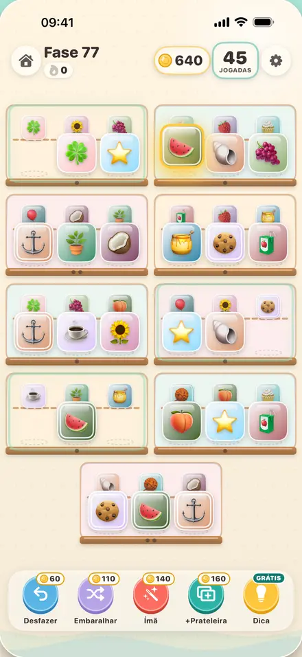
Junte três, limpe a prateleira 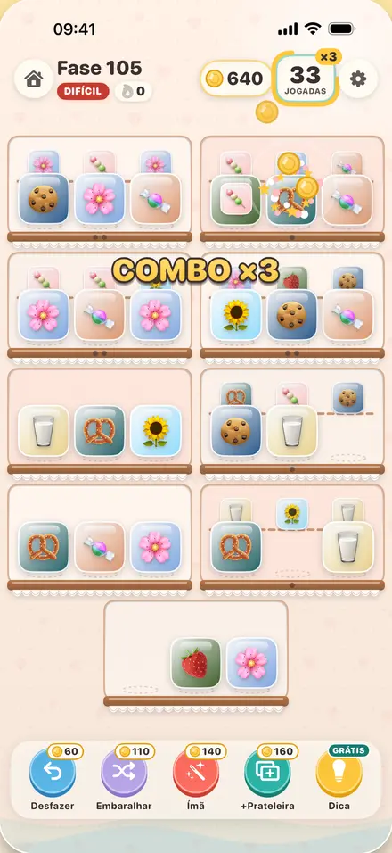
Emende os trios e faça combo 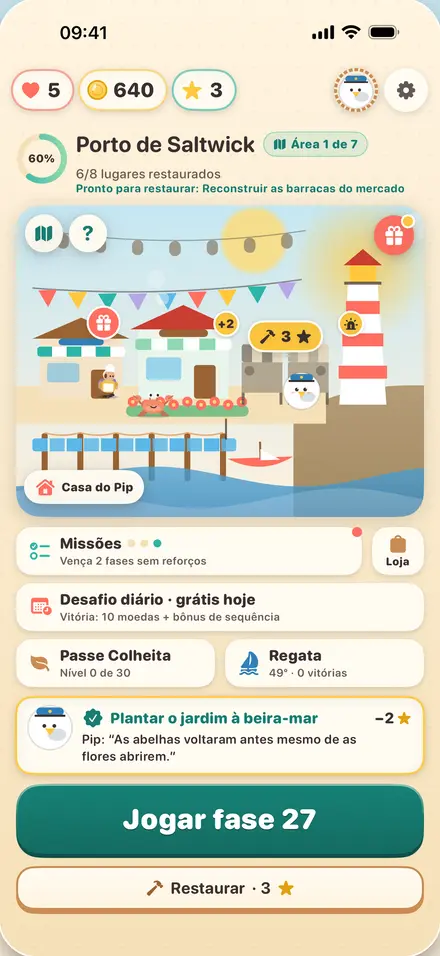
Uma cidade que responde 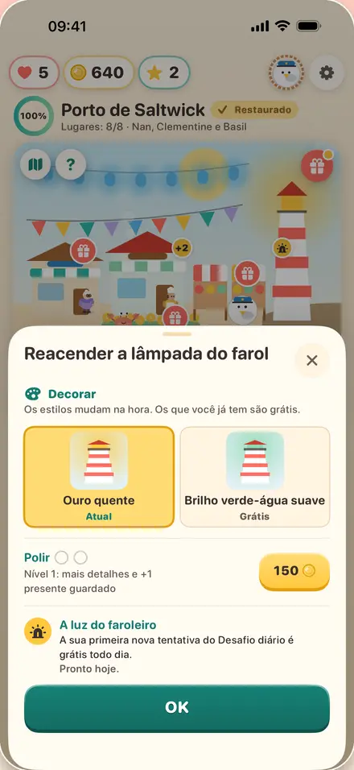
Decore cada lugar do seu jeito 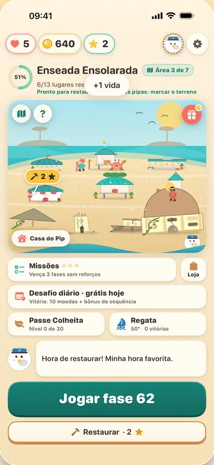
Lugares restaurados te dão presentes 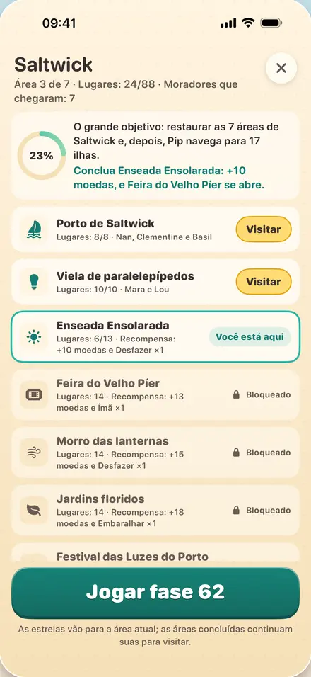
Sete áreas para reconstruir 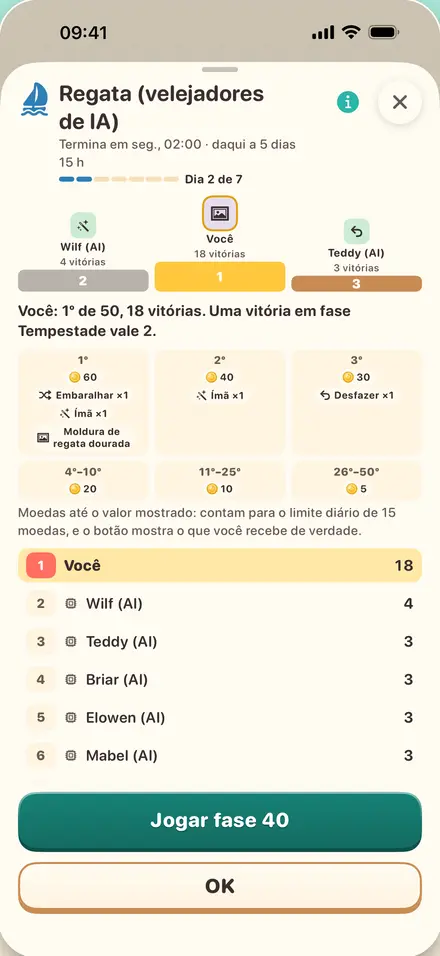
Chegue ao topo toda semana
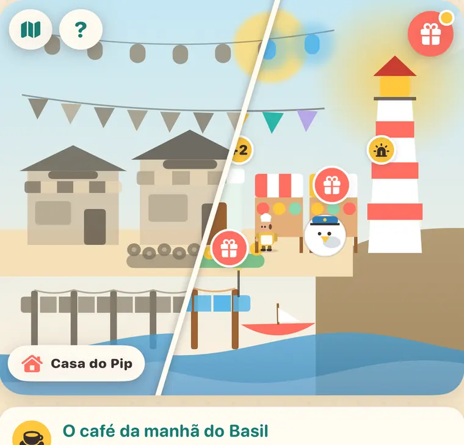
Uma cidade que responde
Ganhe estrelas, reconstrua Saltwick
- Sete áreas para restaurar, do Porto de Saltwick ao Festival de luzes do porto, e depois as ilhas
- Moradores como Nan, Basil, Clementine e Mara se mudam assim que a casa deles é consertada: passeiam pelo calçadão e, com um toque, dizem alguma coisa
- Cada restauração é uma conversa curta: o morador fala e Pip, a gaivota do porto, responde
- A padaria e o farol servem para algo: o café da manhã do Basil dá 2 jogadas a mais na sua primeira fase do dia, e o faroleiro paga sua primeira nova tentativa do Desafio diário
Conheça os moradores

Pip
Pip, a gaivota do porto, recebe você em Saltwick e tem resposta para todo mundo.
Nan
Nan volta a morar aqui assim que o cantinho dela no porto é restaurado, e sempre tem algo a dizer.

Clementine
Clementine, o caranguejo do calçadão, responde com um toque.
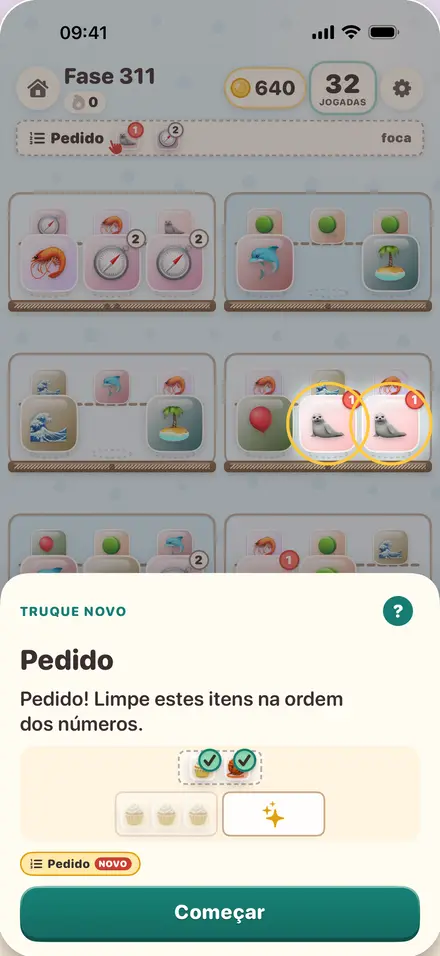
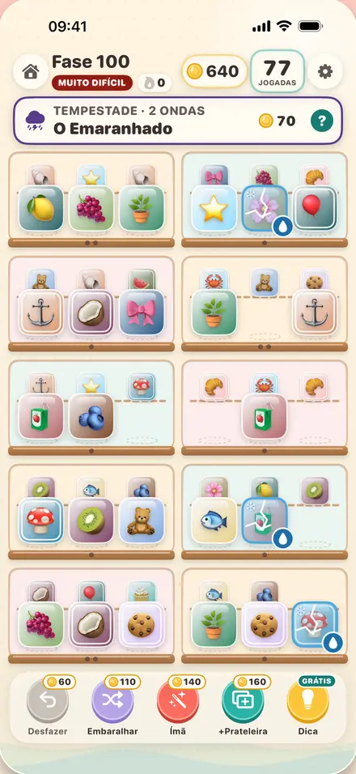
Truques novos, um de cada vez
- Prateleiras rachadas, calhas, carrosséis, balcões, nevascas e pedidos se juntam ao gelo, cadeados, presentes, correntes, caixas, neblina, fases contra o relógio e esteira
- Uma ficha de início mostra cada truque novo com os itens da própria fase antes da sua primeira jogada, e o guia "Como jogar" deixa toda regra a um toque
- Os truques se combinam, chegam variantes, e os turnos duplos trazem uma segunda leva de itens para o tabuleiro
Desafio de verdade
- A dificuldade sobe de verdade: fases DIFÍCEIS, fases MUITO DIFÍCEIS, fases Tempestade, fases misteriosas e pausas tranquilas
- Tabuleiros em torres, escadas, colunas separadas, prateleiras abertas e mais
- Reforços Desfazer, Embaralhar e Ímã quando você quiser, nunca forçados
Por que o Sortwick é diferente
Um download pequeno
Cerca de 27 MB. Instala num instante e deixa espaço para as suas fotos.
Funciona offline
Sem conta e sem conexão: no ônibus, no avião, em qualquer lugar.
Jogadas, não contagem regressiva
As fases são limitadas por jogadas, então dá para parar e pensar. Só as raras fases contra o relógio têm tempo.
Sem anúncios forçados nas primeiras 100 fases
Anúncios entre as fases são raros de propósito e nunca aparecem depois de uma derrota. Os vídeos com recompensa são sempre escolha sua.
Feito para cada tela
O Sortwick se adapta à sua tela: o iPhone, a tela interna larga de um dobrável e o iPad.
Aconchegante e offline
- Funciona offline, sem conta
- Presentes diários, missões, um Desafio diário, uma regata semanal e uma temporada de 28 dias
- Colecione cartas no álbum, desbloqueie conquistas e decore a Casa do Pip com os móveis que você coleciona
- Grátis para jogar. As compras nunca mudam a solução de uma fase, e as caixas do álbum não são vendidas: as chances delas aparecem sempre
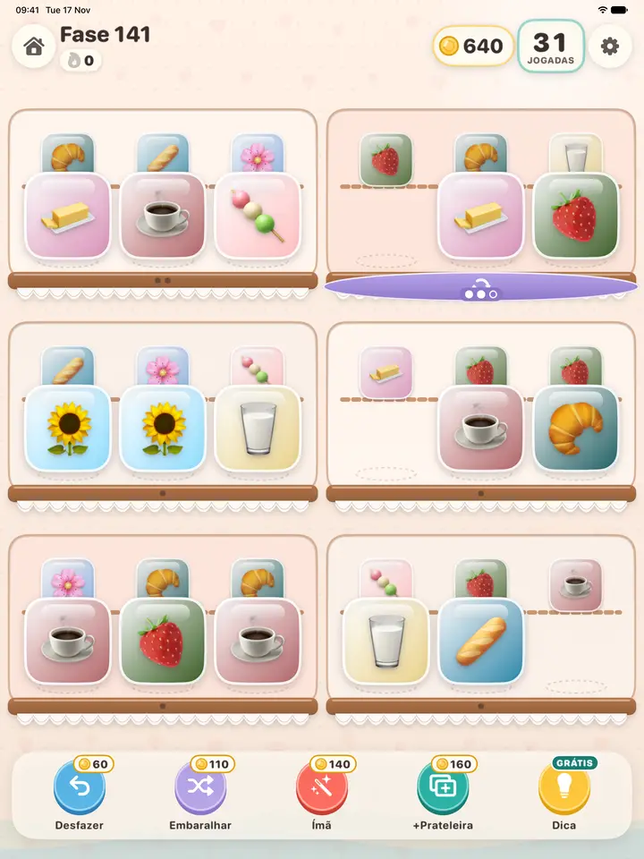
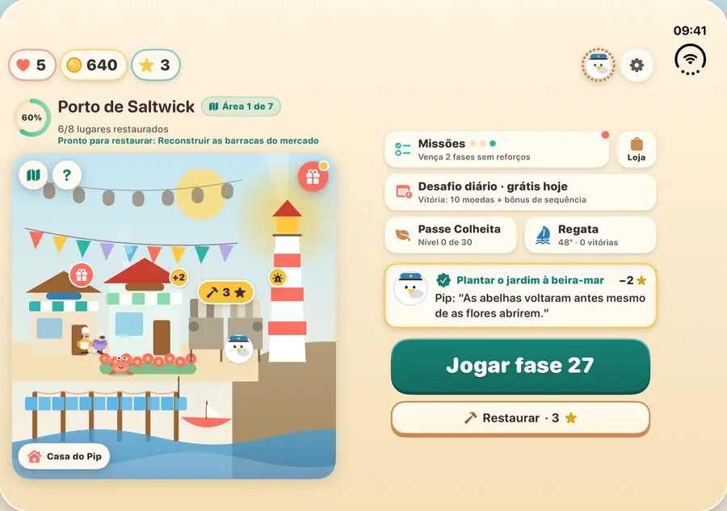
Em breve
Android: ajude a testar
O Sortwick para Android está em teste fechado no Google Play e ainda não foi lançado. Entre no teste, jogue antes de todo mundo e conte o que achou.
Entrar no teste do AndroidA página do teste está em inglês.

Perguntas
O que é um jogo de organizar produtos?
Um jogo de organizar produtos (também chamado de goods sort, triple match ou match 3 de itens) é um quebra-cabeça em que você move itens entre prateleiras até juntar três iguais, que somem. O Sortwick é um jogo de organizar desse tipo, com uma cidade à beira-mar para restaurar com as estrelas que você ganha.
O Sortwick é grátis?
Sim. Baixar e jogar é grátis. As compras são opcionais e nunca mudam a solução de uma fase, e os vídeos com recompensa são sempre escolha sua.
O Sortwick funciona offline?
Sim. As fases, a cidade e o seu progresso funcionam sem internet e sem conta. Só os extras, como placares, compras e vídeos com recompensa, precisam de conexão.
Existe jogo de organizar sem anúncios forçados?
No Sortwick, nenhum anúncio interrompe as primeiras 100 fases, e nunca aparece um depois de uma derrota. Depois disso, anúncios entre as fases são raros de propósito, e uma única compra ("Remover anúncios") acaba com eles.
Em que o Sortwick é diferente de outros jogos de organizar produtos?
As fases são limitadas por jogadas, não por contagem regressiva (só as raras fases contra o relógio têm tempo), e toda fase tem solução. Além disso, há uma cidade com moradores que respondem, um download pequeno de cerca de 27 MB e jogo offline.
Como funcionam as vidas?
Uma fase perdida custa uma vida; as primeiras fases podem ser repetidas de graça. As vidas se recarregam sozinhas com o tempo. Quando elas acabam, um vídeo grátis devolve uma, a loja vende uma recarga por moedas, o VIP do Porto dá uma vida extra, e o Pacote inicial inclui 1 hora de vidas ilimitadas.
Tem anúncios?
Nenhum nas primeiras fases. Depois disso, os vídeos com recompensa são sempre escolha sua (uma vida extra, algumas jogadas a mais, um reforço grátis). Anúncios entre as fases são raros de propósito: nenhum nas primeiras 100 fases e nunca depois de uma derrota. "Remover anúncios" (uma compra única), o VIP do Porto e qualquer compra recente desligam esses anúncios; os vídeos opcionais continuam. Logo depois da fase 1 o jogo pede seu consentimento para anúncios (no EEE, Reino Unido e Suíça) e se pode usar seu identificador de publicidade; se você disser não, os anúncios simplesmente não são personalizados.
O que posso comprar?
Tudo é opcional. Pacotes de 500, 1.400, 3.100 e 8.500 moedas; um Pacote inicial único com 900 moedas, 6 reforços e 1 hora de vidas ilimitadas; o VIP do Porto, uma assinatura mensal (US$ 9,99 por mês, mostrado na sua moeda) com 60 moedas por dia, um baú semanal, uma vida extra e nenhum anúncio entre as fases; o Passe Colheita Premium para a temporada de 28 dias; e "Remover anúncios". Os preços aparecem na moeda da sua App Store ao lado de cada botão Comprar, e a Apple pede confirmação antes de cobrar. As moedas compram continuações, vidas e reforços; elas nunca mudam a solução de uma fase. Você pode definir um limite de gastos diário nos Ajustes.
Como restauro minhas compras ou cancelo o VIP do Porto?
Abra a loja do jogo e toque em "Restaurar compras", com a mesma Conta Apple usada na compra. O VIP do Porto renova todo mês até você cancelar em Ajustes do iOS > seu nome > Assinaturas, pelo menos 24 horas antes da renovação. Reembolsos são tratados pela Apple.
Usa o Game Center?
Sim, se você estiver conectado. Sua pontuação do Desafio diário e suas vitórias na regata semanal vão para dois placares, e 91 conquistas acompanham seu progresso. Desconectado, nada é enviado e o jogo funciona exatamente igual; ele nunca mostra uma tela de login própria.
Quais dados o jogo coleta?
Nenhum dado pessoal: não há conta e não temos servidores que recebam seus dados. O jogo envia estatísticas de jogo anônimas, sem dados pessoais, para que possamos equilibrá-lo; você pode desativá-las nos Ajustes. O progresso fica no seu iPhone e, se você usa o iCloud, na sua própria conta do iCloud. Os anúncios vêm do Google AdMob, que recebe os dados de publicidade habituais, personalizados só com a sua permissão. Pontuações do Game Center e compras são tratadas pela Apple. Os detalhes estão na política de privacidade.
Quais aparelhos e idiomas?
iPhone e iPad com iOS 17 ou mais recente. Em português (Brasil), inglês, alemão, francês, espanhol, italiano, romeno, japonês e coreano.
Pronto para arrumar umas prateleiras?
Grátis na App Store. O Pip está esperando no porto.